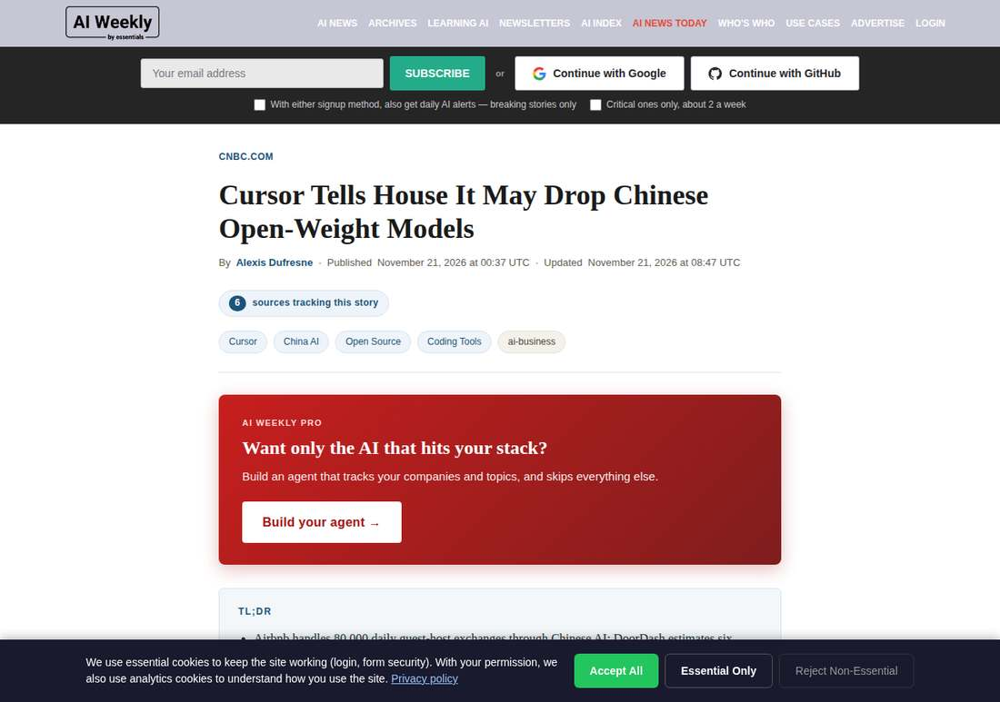

Cursor Tells House It May Drop Chinese Open-Weight Models Over 'Geopolitical Risk'
Two House committees released a joint investigative report on November 20, 2026, urging the removal of Chinese-developed open-weight AI models from federal systems and high-risk critical infrastructure. Cursor, whose Composer 2 coding model was built on Moonshot AI's Kimi K2.5, told the committees it will "explore phasing out PRC-developed open-weight models because of geopolitical risk." The investigation, launched in April 2026, also covered Airbnb and DoorDash. The report makes 12 recommendations, including a national American open-weight initiative. Cursor has announced no successor model and no timeline.

- 01THE INVESTIGATION — In April 2026, the House Committee on Homeland Security and the House Select Committee on China launched a joint investigation into U.S. companies integrating Chinese-developed open-weight AI models.
- 02THE FINDINGS — The committees examined Airbnb, Anysphere (Cursor), and DoorDash, finding adoption driven by cost, customization, and near-frontier performance, and a United States with no competitive open-weight alternative.
- 03THE REPORT — On November 20, 2026, the committees released their joint report. Cursor, whose Composer 2 was built on Moonshot AI's Kimi K2.5, told them it will "explore phasing out PRC-developed open-weight models because of geopolitical risk."
WHAT HAPPENEDWhat Happened
Two House committees released a joint investigative report on November 20, 2026, urging the removal of Chinese-developed open-weight AI models from federal systems and high-risk critical infrastructure. The House Committee on Homeland Security, chaired by Andrew Garbarino, and the House Select Committee on China, chaired by John Moolenaar, published the report after an investigation launched in April 2026 into why American companies turned to Chinese models and what risks that creates.
The report names three companies. Airbnb uses Alibaba models in customer support. DoorDash reported that multiple Chinese model families had been authorized and deployed. And Anysphere, the company behind the Cursor coding platform, which SpaceX acquired in August 2026, built its flagship Composer 2 coding model on Moonshot AI's Kimi K2.5. According to the report, which CNBC saw ahead of publication, Cursor told the committees it will "explore phasing out PRC-developed open-weight models because of geopolitical risk."
The committees' case is that adoption is driven by cost, customization, and near-frontier performance, and that the United States lacks a competitive open-weight alternative at the price and performance the market demands. Their report says much of China's apparent progress rests on capabilities extracted from American models through proxy networks and fraudulent accounts, and that Beijing is using open-weight distribution, state support, and low prices to expand global dependence on its models. The report makes 12 recommendations, including a national American open-weight initiative, a model provenance standard, and extending federal restrictions beyond DeepSeek.
WHY IT MATTERS"Explore" is not a commitment
Cursor's language is the detail to hold onto. The company said it will explore phasing out Chinese-developed open-weight models, not that it will do so, and it has announced no successor base model and no timeline. That is a company telling Congress it hears the concern while keeping its options open, which is understandable: Composer 2 is built on Kimi K2.5, and replacing a base model is a months-long engineering project, not a setting. DoorDash's own evidence to the committees put a number on it, estimating six months to replace a single model.
The report's constructive half is the more durable story. The committees do not only call for bans; their first recommendation is a national American open-weight initiative pooling public computing resources, shared evaluation infrastructure, and lawful access to leading American models for training. The diagnosis underneath is that companies chose Chinese models because the American alternative was either expensive and proprietary or absent. Until that gap closes, every restriction is a demand that companies pay more for less.
WHAT TO WATCHDistillation is the thread through the whole report
The report sits on a year of distillation disclosures. In February 2026, Anthropic said DeepSeek, Moonshot AI, and MiniMax generated more than 16 million exchanges with Claude through about 24,000 fraudulent accounts. In September 2026, the NSA, CISA, and the FBI issued a joint advisory warning of the national security impacts of large-scale distillation against American AI companies. The committees' investigation examined whether the capabilities in Chinese models were advanced through unauthorized distillation from leading American systems.
Watch for three things: whether Cursor names a replacement base model or a timeline, whether the committees' recommendations become legislation or procurement rules, and whether the proposed American open-weight initiative gets funding. The report also recommends extending October's ban on DeepSeek in federal civilian agency systems to all Chinese-developed models in federal systems and federal contract work.
THE SHIFTWhat Changed
SIGNAL JUDGMENT — ANALYSISCongress names the companies; Cursor says it will explore, not commit
Tokenta Signal's judgment: the report moves the open-weight debate from abstract risk to named companies and a concrete legislative ask, and that is the news. The investigation found American companies adopting Chinese models for the plainest reasons, cost, customization, and near-frontier performance, and the committees' own finding is that the United States has no competitive open-weight alternative to offer them. The claim to discount is any version that says Cursor is dropping Chinese models, because it said it will explore a phaseout, with no successor and no timeline. The claim to act on is the constructive half: whether the proposed American open-weight initiative gets built and funded. Bans without an alternative are a demand that companies pay more for less, and the market has already answered that demand once.
WHAT REMAINS UNCERTAINWhat Remains Uncertain
EVIDENCEEvidence

The House Committee on Homeland Security and the House Select Committee on China released a joint investigative report on November 20, 2026, urging the removal of Chinese-developed open-weight AI models from federal systems and high-risk critical infrastructure. Cursor, whose Composer 2 coding model was built on Moonshot AI's Kimi K2.5, told the committees it will "explore phasing out PRC-developed open-weight models because of geopolitical risk." The report makes 12 recommendations, including a national American open-weight initiative.
PRIMARY SOURCESPrimary Sources
- House Committee on Homeland Security: Chairmen Garbarino, Moolenaar Release Joint Investigative Report Urging Removal of PRC Open-Weight Models From Federal Systems, High-Risk Critical Infrastructure
https://homeland.house.gov/2026/11/20/chairmen-garbarino-moolenaar-release-joint-investigative-report-urging-removal-of-prc-open-weight-models-from-federal-systems-high-risk-critical-infrastructure/ - Reuters: SpaceX's Cursor weighs phasing out Chinese AI models over geopolitical risk, CNBC reports
https://q106fm.com/2026/11/20/spacexs-cursor-weighs-phasing-out-chinese-ai-models-over-geopolitical-risk-cnbc-reports/ - Seeking Alpha: SpaceX's AI-coding platform Cursor considers phasing out use of Chinese models: report
https://www.tradingview.com/news/seekingalpha:3106e6b6f094b:0-spacex-s-ai-coding-platform-cursor-considers-phasing-out-use-of-chinese-models-report/ - AI Weekly: Cursor Tells House It May Drop Chinese Open-Weight Models
https://aiweekly.co/alerts/cursor-tells-house-it-may-drop-chinese-open-weight-models